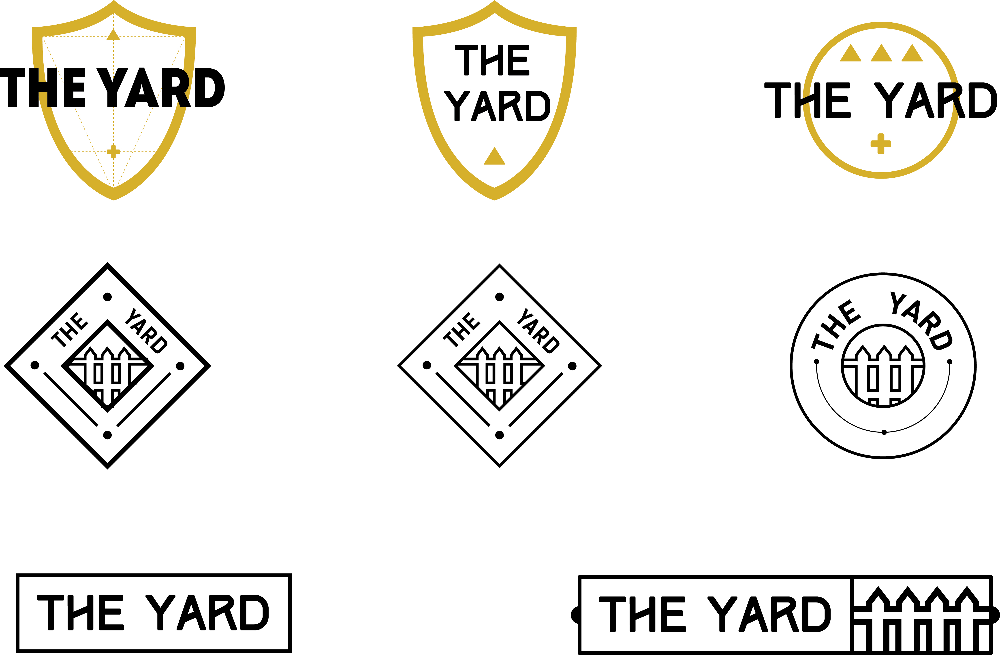
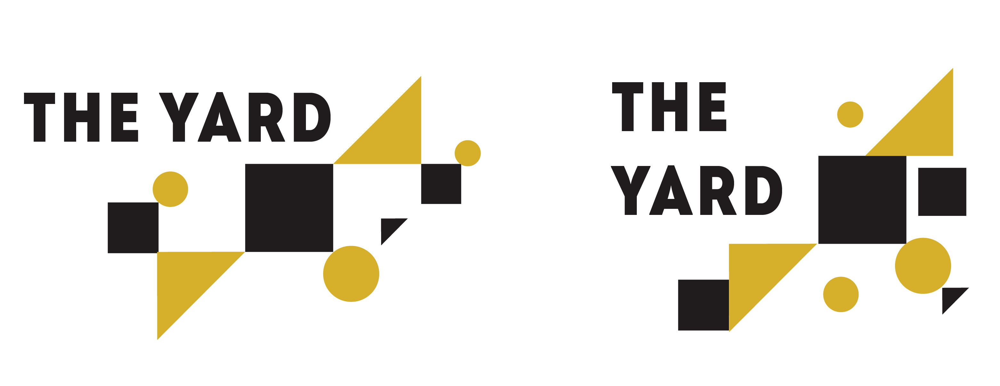

The Yard
Branding
Accomplice VC created a co-working space within their office in Cambridge, called The Yard. The space needed its own identity, but also had to relate to Accomplice's already-established brand. Here are a few icon options we worked with.

Working off of the vibe of the icon, I created a couple of sign options for the space. I wanted to evoke a sense of scrappyness, relating to the bits and pieces that make up Accomplice's badass group of people in the space.
